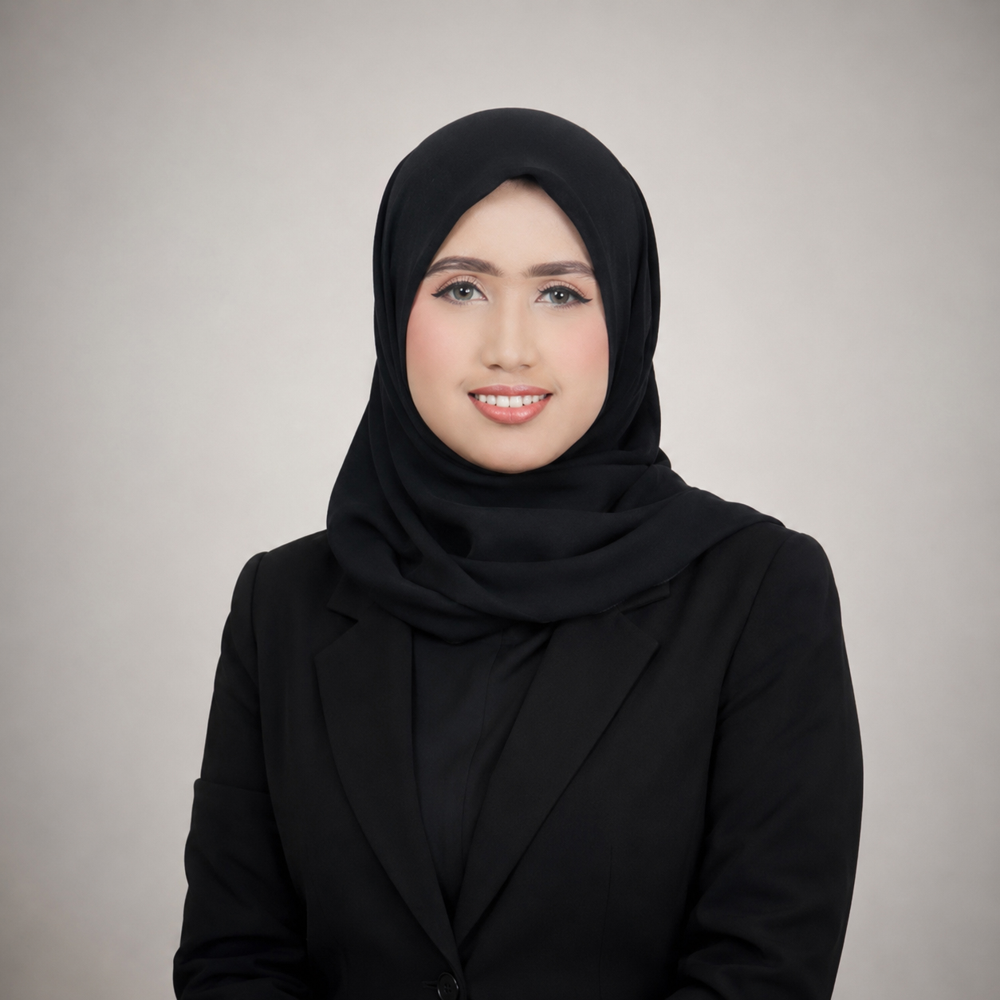

A.Md.RM., S.K.M. — Tenaga Kependidikan, Direktorat Perencanaan & Pengembangan, Universitas Andalas
Padang, Sumatera Barat
Tenaga kependidikan dengan pengalaman lebih dari dua tahun di bidang administrasi, pengolahan data, dan dukungan operasional pada Direktorat Perencanaan dan Pengembangan Universitas Andalas. Terbiasa mengelola data kepegawaian skala besar, menyusun dokumen dinas resmi, serta mengembangkan alat bantu visualisasi data berbasis web.
Berlatar pendidikan Rekam Medis (D3) dan Kesehatan Masyarakat (S1), dengan ketelitian dan akurasi data sebagai prinsip utama dalam setiap pekerjaan yang dijalankan.
Mengolah data ±3.200 dosen dan tenaga kependidikan serta mendesain sampul lima buku direktori resmi. Output ditandatangani Rektor dan dipublikasikan sebagai acuan institusi.
Dashboard interaktif berbasis Chart.js yang menampilkan capaian 8 indikator kinerja utama Universitas Andalas periode 2021–2025.
Lihat dashboardHalaman struktur organisasi interaktif berbasis HTML/SVG untuk Direktorat Perencanaan dan Pengembangan UNAND, diperbarui berkala sesuai perubahan personil.
Lihat strukturBerkontribusi dalam pengumpulan data dan analisis SWOT untuk Rencana Strategis 2025–2029 dan Rencana Pembangunan Jangka Panjang 2025–2045.
Menyusun rekapitulasi serapan anggaran dan capaian fisik pada sheet Rekap, Sarana, Prasarana, Pelatihan, dan Lokakarya, berdasarkan dokumen unit yang dihimpun melalui Google Drive, serta notulensi rapat monev.
Lihat ringkasan dataMenyusun dan menginput data perencanaan sarana-prasarana UNAND pada 14 jenis formulir portal SISARPRAS Kemdiktisaintek, termasuk laporan pemanfaatan proyek SBSN 2022–2023 dengan realisasi anggaran lebih dari Rp209 miliar.
Lihat ringkasan dataMenyusun notulensi rapat dan laporan perjalanan dinas terkait perencanaan pembangunan Kandang Penelitian dan Praktikum Fakultas Peternakan serta Gedung Serba Guna di Kampus II UNAND Payakumbuh, termasuk dokumentasi kegiatan peninjauan lokasi dan pengukuran batas lahan.